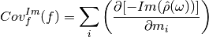
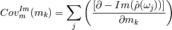

Coverage for each frequency: Sum up the sensitivitities of all m-Values for each frequency:

Coverage for each value: Sum up the sensitivities of all frequencies for each m-value:



 value: Sum up the sensitivities of all frequencies for each m-value:
value: Sum up the sensitivities of all frequencies for each m-value: